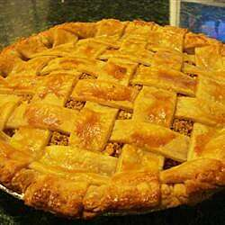

Apple Pie

Hot homemade apple pie
Apple pie flavor without the apples. Fun to make and sure to please, but should be served warm! Enjoy.
Ingredients
- 2 cups of water
- 1 cup of white sugar
- 2 teaspoons cream of tarter
- 30 buttery round crackers
- 1/2 teaspoon ground cinnamon
- 1 tablespoon of lemon juice
- 1 recipe pastry of a 9 inch single crust pie
- 1 cup of crushed buttery round crackers
- 1/2 cup packed brown sugar
- 1/2 teaspoon of ground cinnamon
- 1/3 cup butter melted
Cooking Steps
- Preheat oven to 425 degrees F (220 degrees C)
- In a saucepan over medium high heat, combine the water, sugar and cream of tartar; bring to boil.
- Drop in whole crackers and boil for 5 minutes. Pour mixture into pie shell; sprinkle with cinnamon and lemon juice.
- Mix together the crushed crackers, brown sugar, cinnamon and butter; sprinkle over pie filling.
- Bake for 15 minutes and reduce heat to 375 degrees F (190 degrees C) and continue to bake for 15 to 20 minutes longer. Serve warm